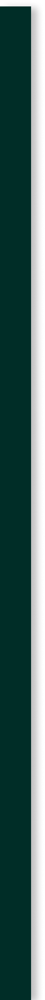
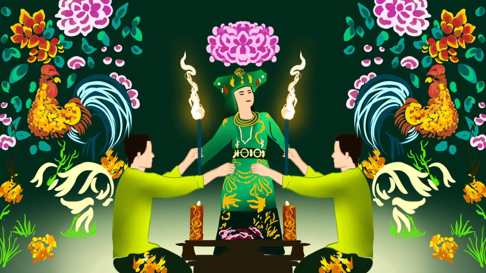

HẦU ĐỒNG - VIETNAMESE SPIRIT POSSESSION RITUAL
Hầu đồng (Vietnamese spirit possession ritual) is a central practice in Đạo Mẫu, the Vietnamese Mother Goddess worship. During Hầu đồng ceremonies, a medium is possessed by spirits or deities, often of historical or mythological figures, and communicates with the living. The ritual involves dramatic costume changes, music, dance, and offerings. It aims to seek blessings or guidance from the spirits. Hầu đồng is an important part of Vietnamese spirituality and is known for its vibrant, theatrical performances, which are accompanied by traditional music and percussion.